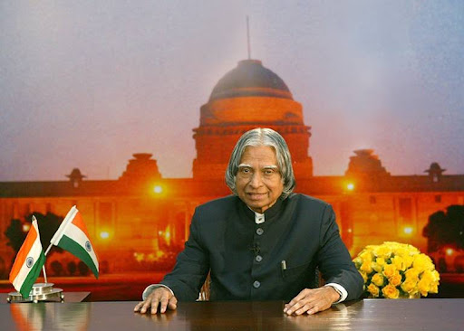

In this Indian name, the name Avul Pakir Jainulabdeen is a patronymic, not a family name, and the person should be referred to by the given name, Abdul Kalam . Avul Pakir Jainulabdeen Abdul Kalam 15 October 1931-27 July 2015) was an Indian aerospace scientist and politician who served as the 11th President of India from 2002 to 2007. He was born and raised in Rameswaram, Tamil Nadu and studied physics and aerospace engineering. He spent the next
four decades as a scientist and science administrator, mainly at the Defence Research and Development Organisation (DRDO) and Indian Space Research Organisation (ISRO) and was intimately involved in India's civilian space programme and military missile development efforts.
He was a scientist, writer, inspirational speaker and motivational personality.
His Contribution Towards the Nation
- He took up the responsibility of developing Indigenous Guided Missiles at DRDO
- He was the brain behind multiple nuclear tests carried out at Pokhran in 1998 which made India a nuclear weapon state
- He helped design a cost-effective coronary stent known as 'Kalam-Raju-Stent' making healthcare accessible to all.
- He was deeply involved in the country's Light Combat Aircraft project.

11th PRESIDENT OF INDIA
In 2002 He was elected as a 11th President of India. Widely referred to as the "People's President".
MISSILE MAN OF INDIA
He was the man behind the India's first nuclear test in Pokhran.He headed the 5 different types of missiles projects-
PRITHVI, AGNI, TRISHUL, AKASH, NAG.
INSPIRATIONAL SPEAKER AND WRITER
His creation WINGS OF FIRE is one of the most liked books in the world. His quotes are world famous like "Every pain gives a lesson and every lesson changes a person"
Previous
Next